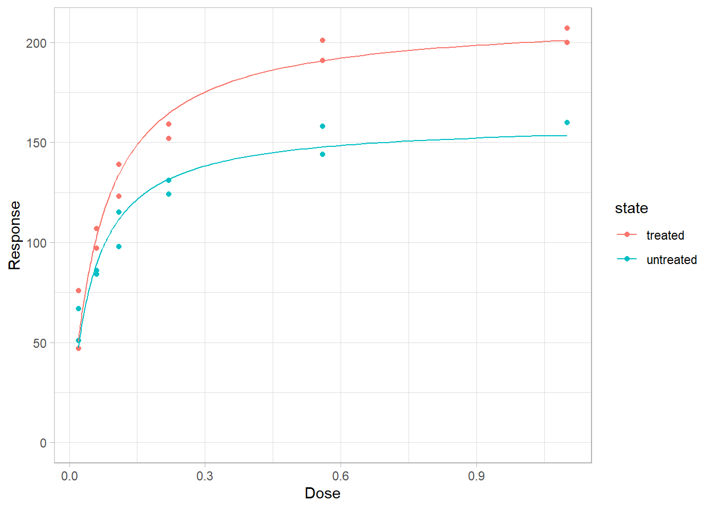
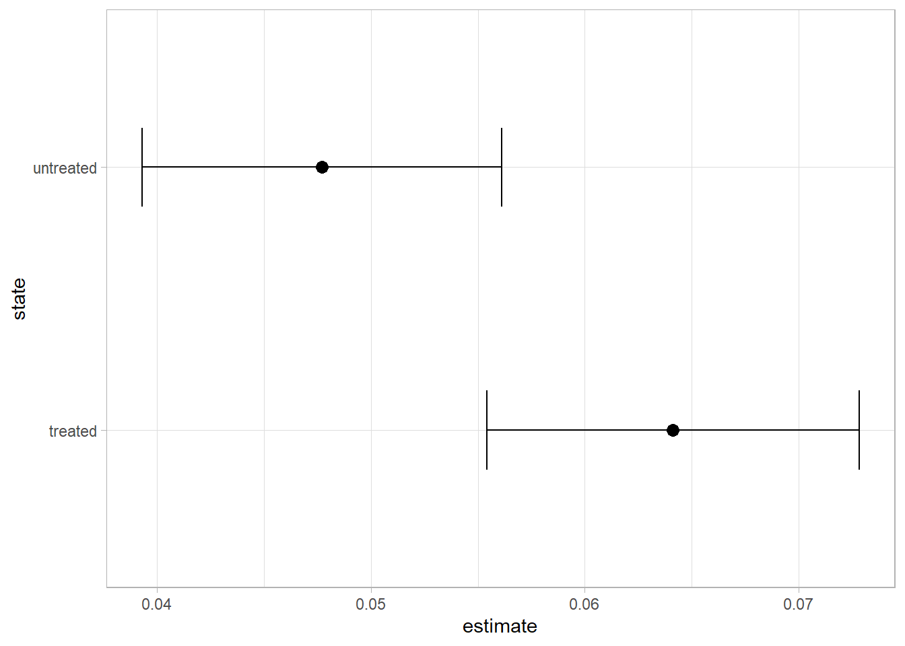

Calculating a \(V_{max}\) and \(K_{m}\) for an Enzyme
How tightly does my protein bind?
Author
Brady Johnston
Published
April 5, 2022
Playing around with modelling dose-response curves in R, to calculate a \(K_{d}\) for an interaction between a protein and it’s potential binding target. And now some more text.
[[1]]
# A tibble: 1 x 4
AIC BIC logLik df.residual
<dbl> <dbl> <logLik> <int>
1 95.3 96.7 -44.63548 10
[[2]]
# A tibble: 1 x 4
AIC BIC logLik df.residual
<dbl> <dbl> <logLik> <int>
1 85.2 86.4 -39.5805 9
Code
mod %>%b_plot(colour = state, facet =FALSE) + ggplot2::coord_cartesian(ylim =c(0, NA))

Code
mod %>%b_coefs() %>% knitr::kable()
state
term
curve
estimate
std.error
statistic
p.value
treated
d
(Intercept)
212.6838544
7.1606488
29.701757
0.0000000
treated
e
(Intercept)
0.0641215
0.0087112
7.360806
0.0000242
untreated
d
(Intercept)
160.2802158
6.8060674
23.549607
0.0000000
untreated
e
(Intercept)
0.0477084
0.0084203
5.665846
0.0003073
Code
mod %>%b_plot_coefs(state, term ="e")

Is there actually a difference between the two sates? We can see their fits inside of ?@fig-first-plot but we are unsure if it will actually be significant. We can compare the two models: